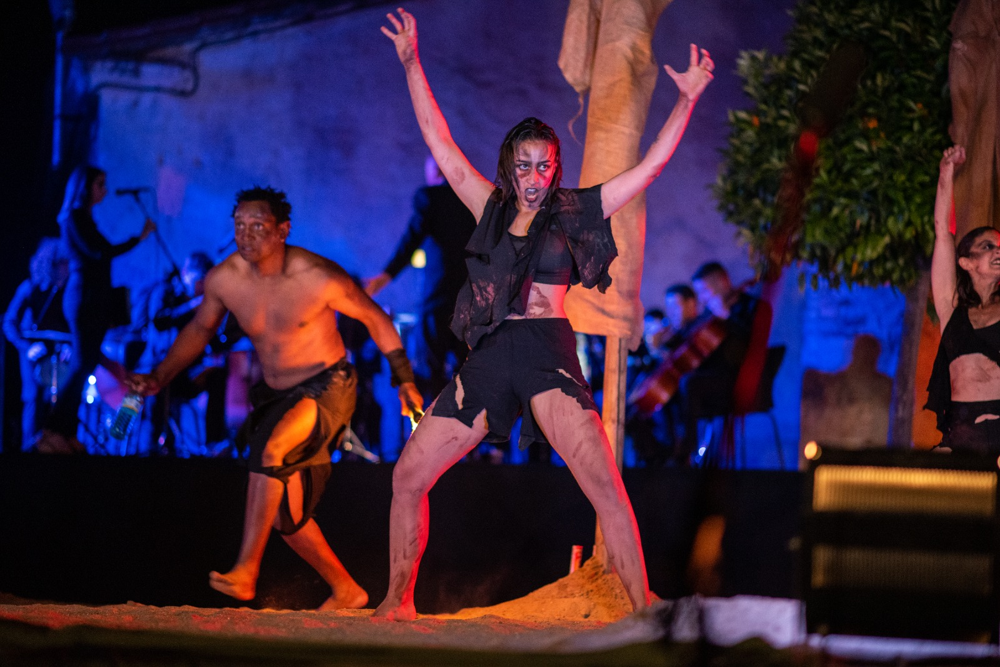
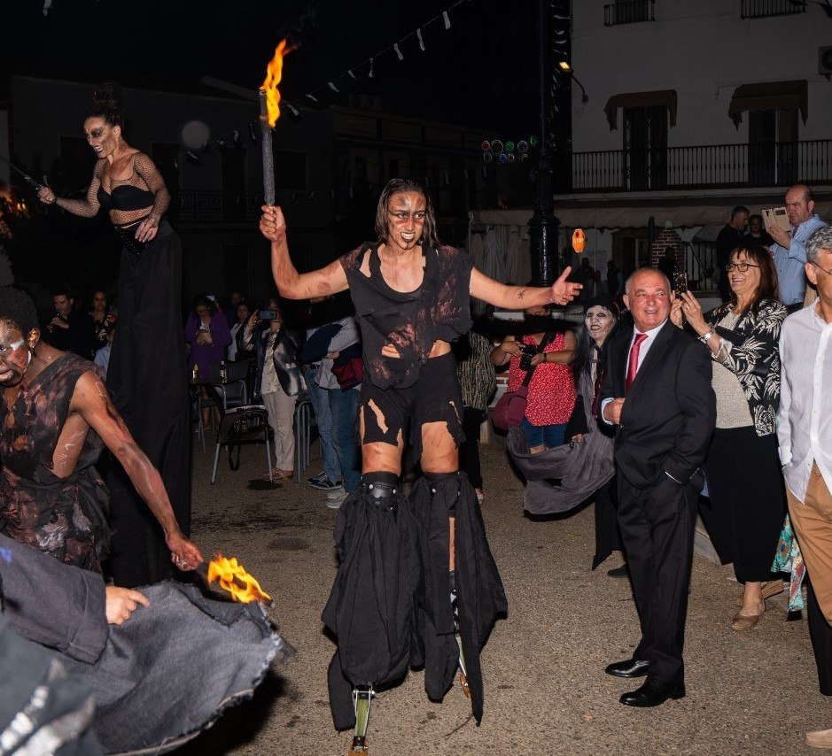

CRISTINA GRAOS


A lo largo de su carrera, ha demostrado una notable versatilidad en el ámbito de las artes escénicas.

Además de escribir y representar sus propias obras, como “Sin Buga” y “Sin ánimo de lucro”, ha colaborado con diversas compañías teatrales, llevando a escena producciones como “La Clausura del Amor”, “Los Ciegos”, “La Princesa y el Pirata”, “Cronopios y una escalera” y “Dipsi y Loren, una aventura planetaria”.
Su participación en estas obras no solo destaca su talento como intérprete, sino también su capacidad para adaptarse a diferentes estilos y temáticas.
Asimismo, no se puede pasar por alto su faceta circense, donde ha realizado pasacalles en zancos y monociclo, combinando su habilidad para el malabarismo con una presencia escénica cautivadora.
Esta experiencia en el circo le ha permitido explorar nuevas formas de expresión artística, enriqueciendo aún más su trayectoria y aportando un toque dinámico y divertido a cada actuación.

Su dedicación y pasión por las artes escénicas la convierten en una artista completa, siempre en búsqueda de nuevos retos y experiencias creativas.